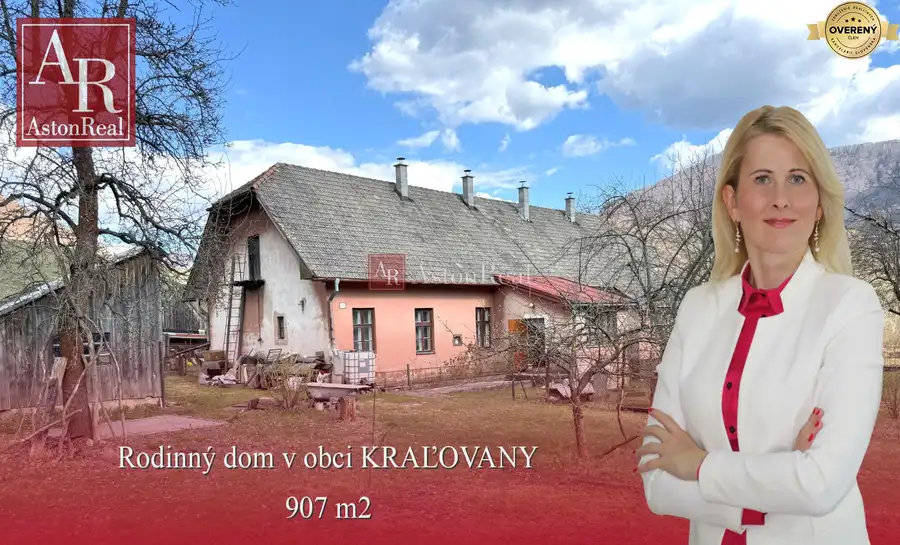
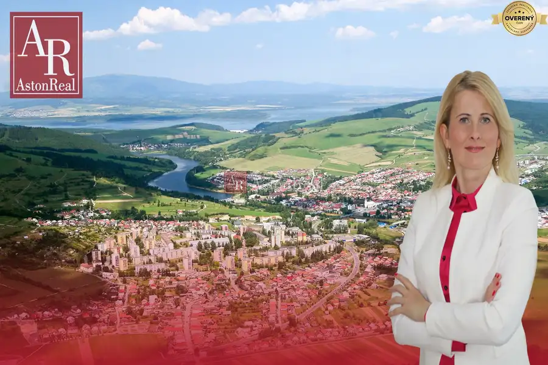
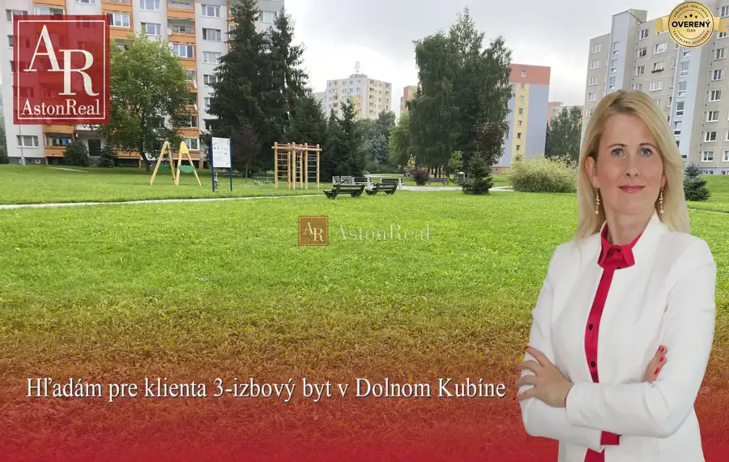
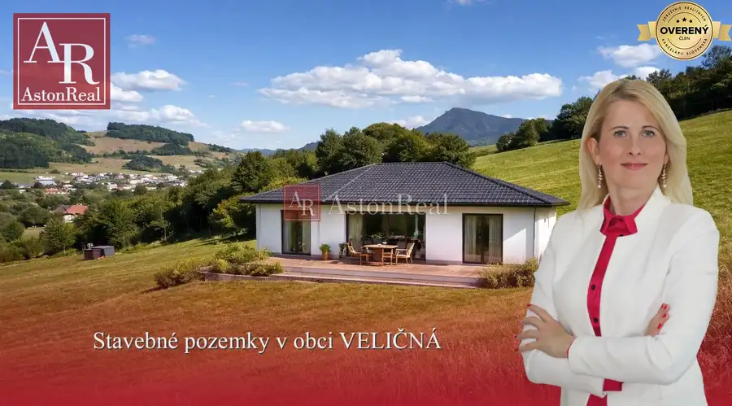
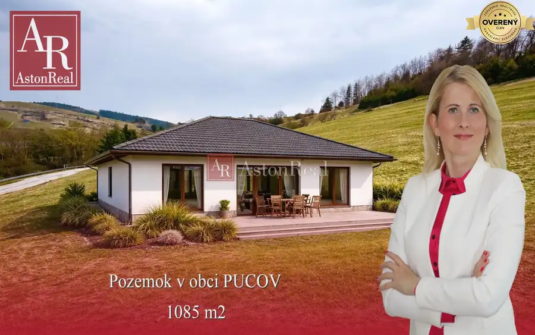
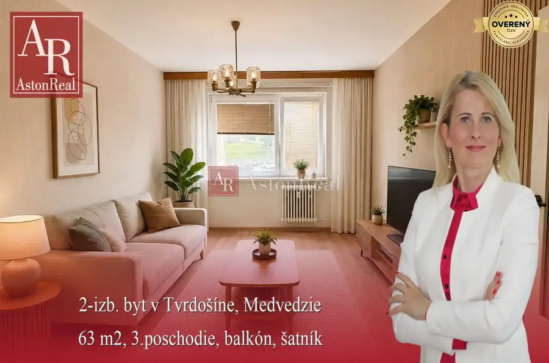
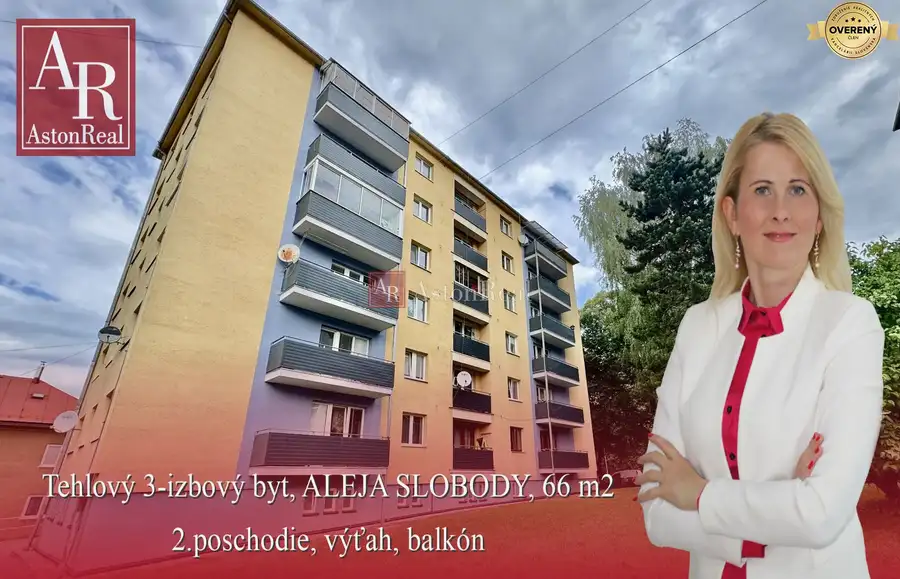
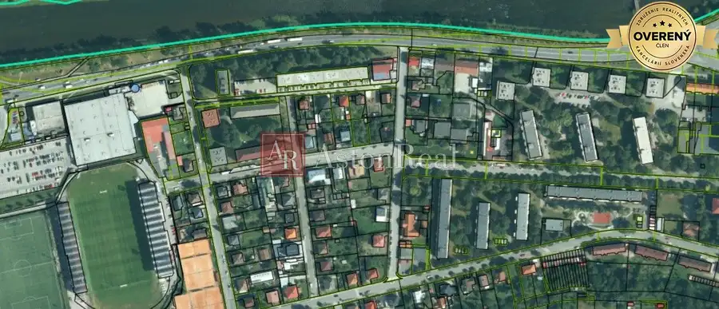
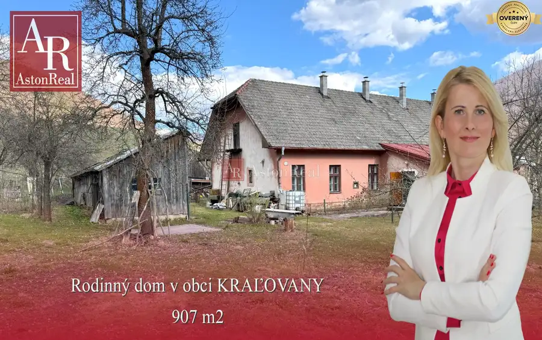

Aktuálna ponuka
10 nehnuteľností, predovšetkým byty, rodinné domy, pozemky. Každá má vlastnú stránku s fotkami, popisom a mapou.
Prezrieť ponukuMichaela VozatárováRealitná maklérka
Realitná maklérka · AstonReal s.r.o.
Predaj a prenájom nehnuteľností · Dolný Kubín, Ružomberok, Tvrdošín




Pozemok5 67 500 €Stavebné pozemky v obci Veličná Dolný Kubín 500 m² Hľadáte miesto, kde si postavíte vysnívaný rodinný dom? Máme pre vás výnimočnú ponuku v obci Veličná, len pár minút od Dolného Kubína! Do predaja…
Pozemok10 75 950 €Na predaj pozemok v obci PUCOV, Dolný Kubín, 1085 m2 Dolný Kubín 1085 m² AstonReal ponúka na predaj krásny stavebný pozemok v pokojnej obci Pucov s celkovou výmerou 1085 m², okres Dolný Kubín. Pozemok má ideálny štvorcový…
Byt9 125 000 €Priestranný 2-izb. byt, TVRDOŠÍN, 63m2, 3.p. balkón Tvrdošín 2-izbový60 m²3. podlažie AstonReal ponúka na predaj 2-izbový byt s výmerou 63 m², nachádzajúci sa v lokalite Tvrdošín – časť Medvedzie, na 3. poschodí bytového domu, s…
Byt10 139 000 €TEHLOVÝ 3-izbový byt, ul. ALEJA SLOBODY, 66 m2, 2.p., balkón, výťah Dolný Kubín 3-izbový62 m²2. podlažie Byt prešiel čiastočnou rekonštrukciou a ponúka príjemné bývanie s možnosťou ďalších úprav podľa vlastných predstáv. Dispozične pozostáva z obývacej…
Byt 123 000 €Pripravujem do ponuky!!! 2-izbový byt v Ružomberku Ružomberok 2-izbový60 m²4. podlažie AstonReal pripravuje do ponuky 2-izbový byt v RUŽOMBERKU, ulica Žilinská cesta. Dispozične pozostáva z dvoch samostatných izieb, kuchyne so špajzou,…
Rodinné domy10 120 000 €Na predaj RODINNÝ DOM v Kraľovanoch, 907 m2 Dolný Kubín 100 m² AstonReal ponúka na predaj RODINNÝ DOM v obci KRAĽOVANY, v mestskej časti RIEKA. Dom sa nachádza na rovinatom pozemku o výmere 907 m2. Prístup je z…Tomuto výberu zatiaľ nezodpovedá žiadna ponuka. Napíšte mi, čo hľadáte.
Volám sa Bc. Michaela Vozatárová. Som realitná maklérka kancelárie AstonReal s.r.o. a pôsobím predovšetkým v lokalitách Dolný Kubín, Ružomberok, Tvrdošín a Trstená (Žilinský kraj).
10 nehnuteľností, predovšetkým byty, rodinné domy, pozemky. Každá má vlastnú stránku s fotkami, popisom a mapou.
Prezrieť ponukuDolný Kubín, Ružomberok, Tvrdošín, Trstená a okolie. Ponuku si môžete prezrieť podľa lokality.
Nehnuteľnosti v lokaliteOdhad trhovej ceny, príprava prezentácie, obhliadky, zmluvy a odovzdanie nehnuteľnosti.
Dohodnúť stretnutieNa čo sa pýtate najčastejšie, skôr než sa stretneme.
Odhad trhovej ceny vychádza z aktuálnych ponúk a predajov v lokalite, nie z cenníkových tabuliek. Podmienky Vám poviem pri prvom telefonáte.
Najprv obhliadka a odhad ceny, potom príprava prezentácie (fotografie, popis, inzercia), obhliadky so záujemcami, rezervačná zmluva, kúpna zmluva, návrh na vklad do katastra a odovzdanie nehnuteľnosti. O každom kroku viete vopred.
Najrýchlejšie cez WhatsApp alebo telefón. Termín stretnutia alebo obhliadky dohodneme podľa Vás.